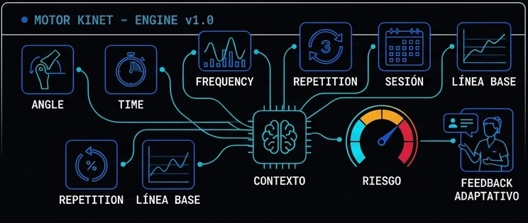
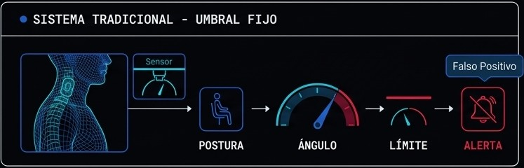
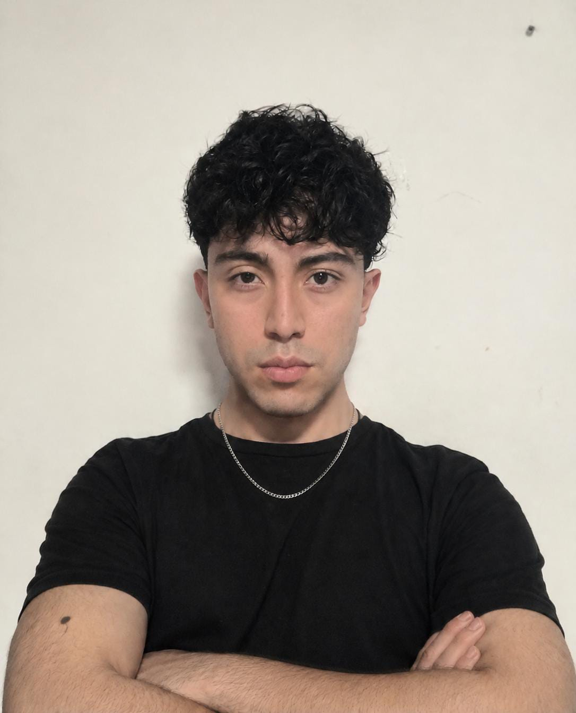
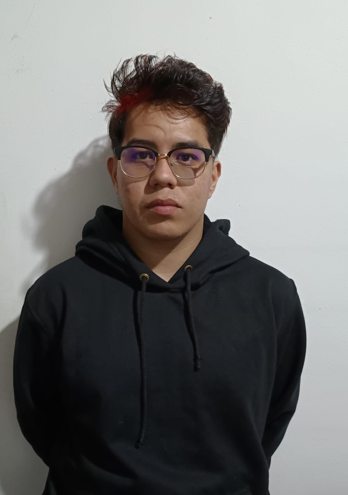

No solo detectamos una mala postura.
Aprendemos cuándo realmente representa un riesgo.


Pasar largas jornadas sentado frente a un computador es una de las principales causas de dolor cervical, dorsal y lumbar en el trabajo remoto y el estudio.
Los sistemas tradicionales solo comparan el ángulo contra un límite fijo — sin importar el contexto — generando alertas irrelevantes que el usuario termina ignorando.
KINET es un prototipo conceptual de inteligencia postural adaptativa, desarrollado por Iris Systems como proyecto de Ingeniería Aplicada. En lugar de comparar el ángulo corporal contra un umbral fijo, KINET analiza el contexto completo de la sesión — tiempo de exposición, frecuencia y repetición — para estimar un nivel de riesgo real y entregar una retroalimentación proporcional, no una alarma genérica.
Reducir la fatiga postural y el riesgo de lesiones músculo-esqueléticas en jornadas prolongadas frente al computador, evitando el exceso de alarmas irrelevantes.
Detección de postura → análisis contextual (ángulo, tiempo, frecuencia) → cálculo de riesgo adaptativo → feedback proporcional al nivel de riesgo real.
Estudiantes, teletrabajadores y cualquier persona que pase largas horas sentada frente a una pantalla.
Prevención temprana de dolor crónico asociado a malas posturas sostenidas, con un enfoque que respeta la atención del usuario.
Equipo de estudiantes de Ingeniería que desarrolla KINET como proyecto académico, explorando inteligencia artificial, análisis de datos y sistemas adaptativos aplicados a la salud postural.

Diseña la arquitectura del motor KINET y desarrolla la visión por computador para interpretar la postura.

Lidera la estrategia, las alianzas y la validación del producto para llevar KINET hacia usuarios reales.
KINET responde a una carga real, documentada en literatura de salud ocupacional: el trabajo sedentario frente a pantallas ya está generando dolor músculo-esquelético a gran escala. Estas cifras provienen de estudios publicados, no de telemetría de KINET.
Maqueta conceptual de la interfaz que acompañaría una sesión de análisis en tiempo real.
Iris Systems está construyendo KINET como proyecto de Ingeniería Aplicada. Si quieres colaborar o recibir novedades, regístrate.